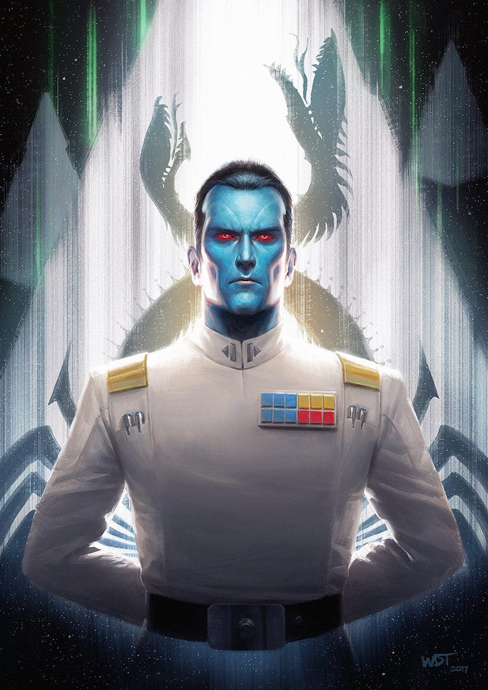
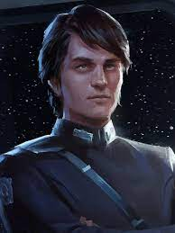
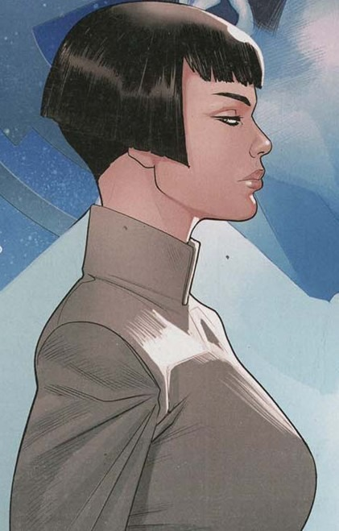

Main Characters

Grand Admiral Thrawn
Description: Brilliant tactician with a keen understanding of art and culture.
Relationship: Master strategist leading the Imperial forces.
Development: Witness the evolution of Thrawn's character and strategies.

Eli Vanto
Description: Loyal aide with a background in languages.
Relationship: Supportive ally of Thrawn and other characters.
Development: Experience Eli's personal growth and adaptation to new challenges.

Arihnda Pryce
Description: Ambitious and resourceful, striving for power within the Empire.
Relationship: Explore Arihnda's connections with key characters.
Development: Navigate through the hurdles and transformations in Arihnda's journey.